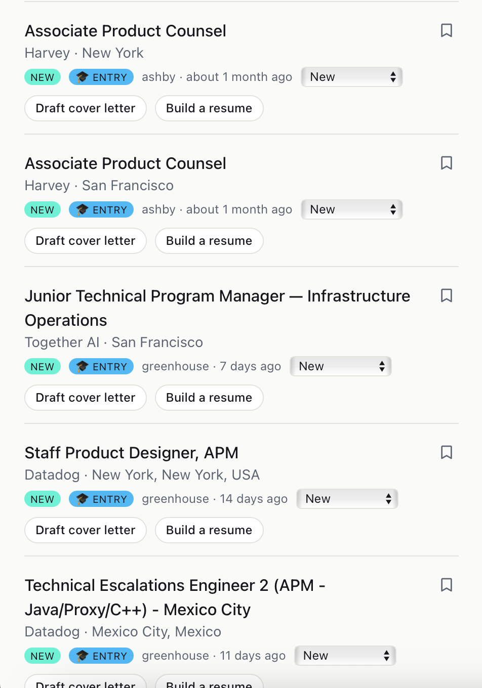
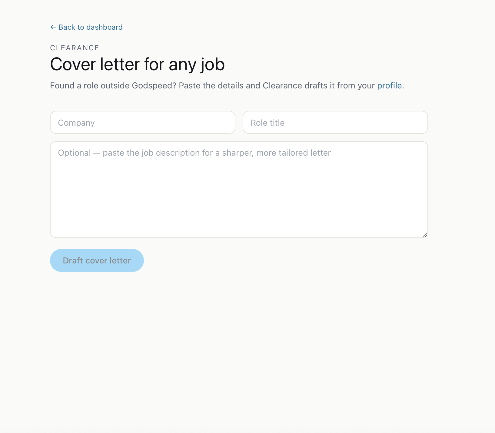
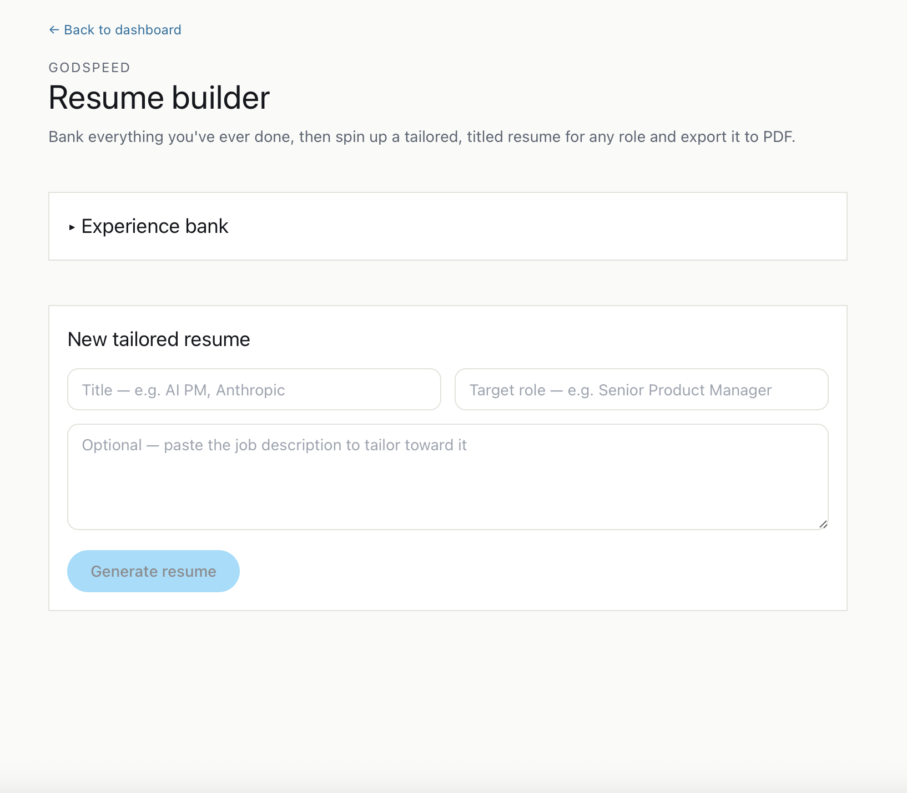
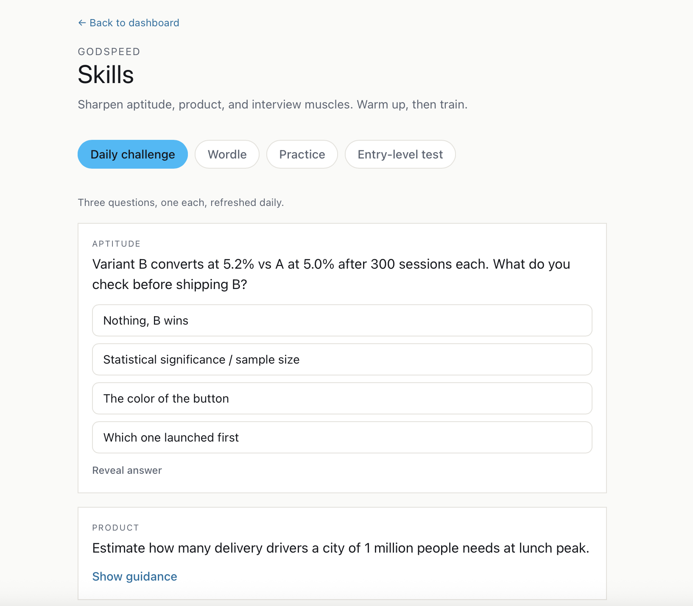
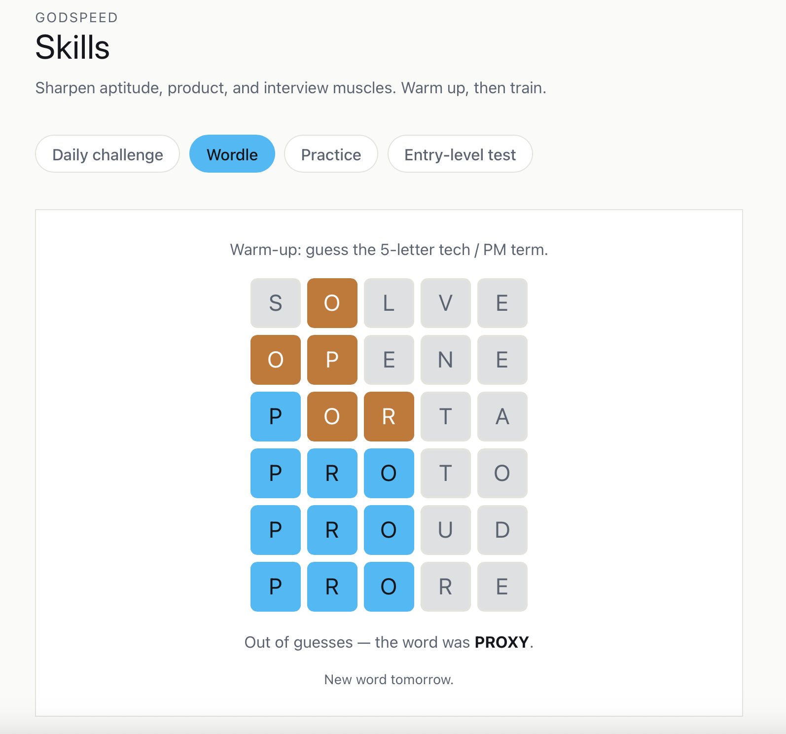
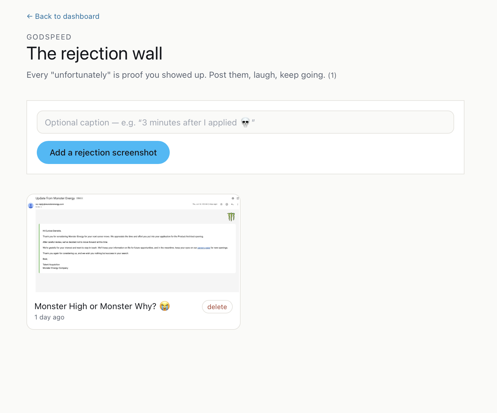
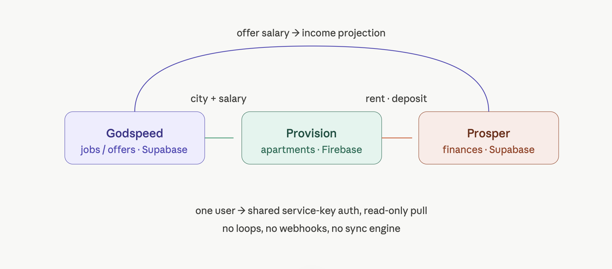

Job Search · Full-Stack AI Web App
A self-hosted job-search command center that pulls live postings, company news, contacts, and AI-drafted cover letters into one place, replacing the dozen tabs and spreadsheets a real search runs on.
Finding the right role means tracking open postings at the companies you care about, following their news, finding the people worth reaching out to, tailoring a cover letter for each application, and remembering where every conversation stands. Most people juggle that across tabs, notes, and a fragile spreadsheet.
Godspeed brings the whole search under one roof and runs the busywork on its own, so the time goes to the parts that actually move the needle.

Live postings from your target companies, each with a one-click cover letter and resume.

Clearance drafts a tailored letter for any role, straight from your profile.

Bank everything you've done, then generate a tailored resume and export it to PDF.

A daily aptitude, product, and interview workout to stay sharp.

A quick game to keep momentum on the days applying feels like a lot.

Every "unfortunately" reframed as proof you showed up.
Godspeed is one of three apps I designed to talk to each other through a single private data contract. It owns the jobs. The city and salary behind a role you're chasing flow downstream to Provision, which uses them to gauge what you can afford, and onward to Prosper, which turns an offer into an income projection. Every cross-app call happens on the server and is authenticated with a shared secret, so nothing sensitive ever reaches the browser.

Designing the contract first, then building the producer here in Godspeed, is what let the other two apps consume it without ever touching this codebase. That separation, one direction of data and one shared secret, is the part I'm proudest of: it shows I can design a system, not just a screen.